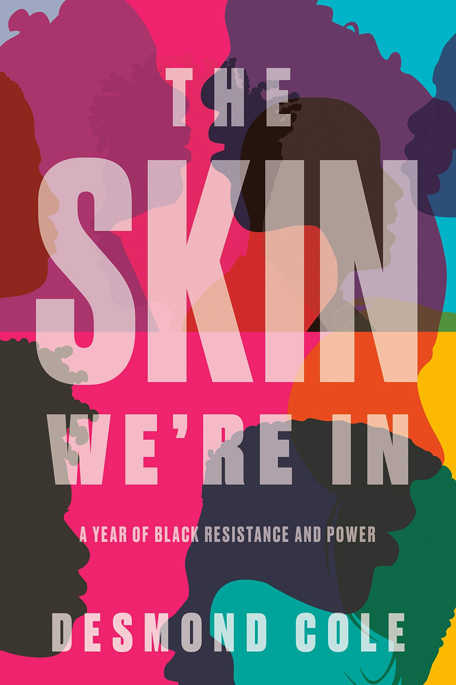
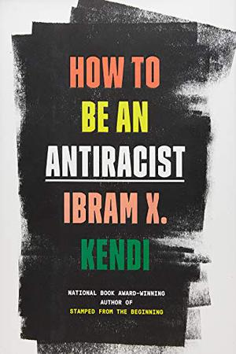
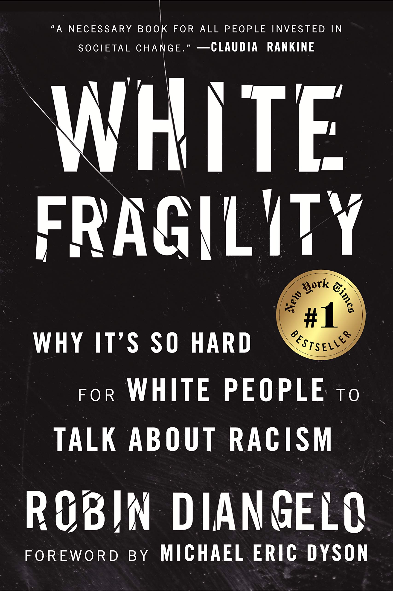
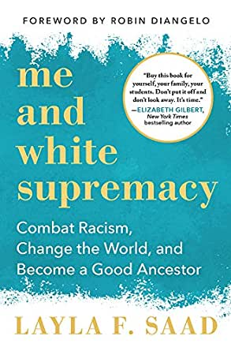
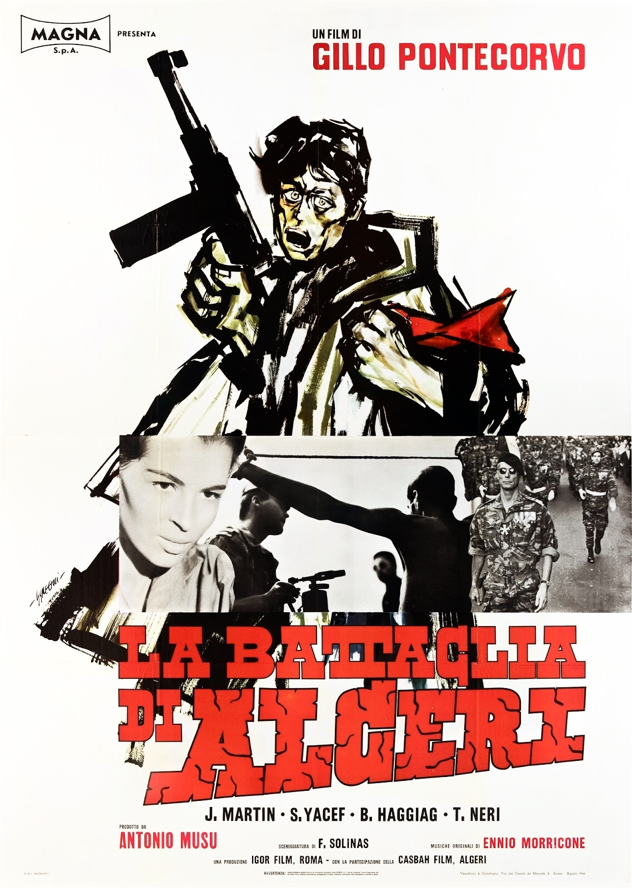
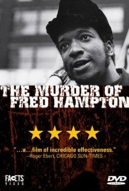
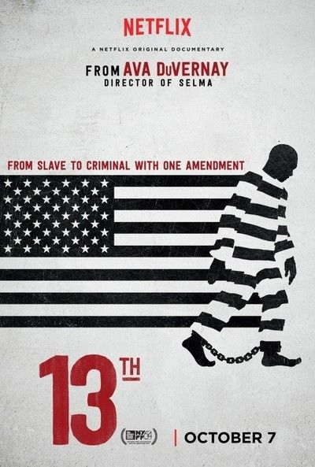
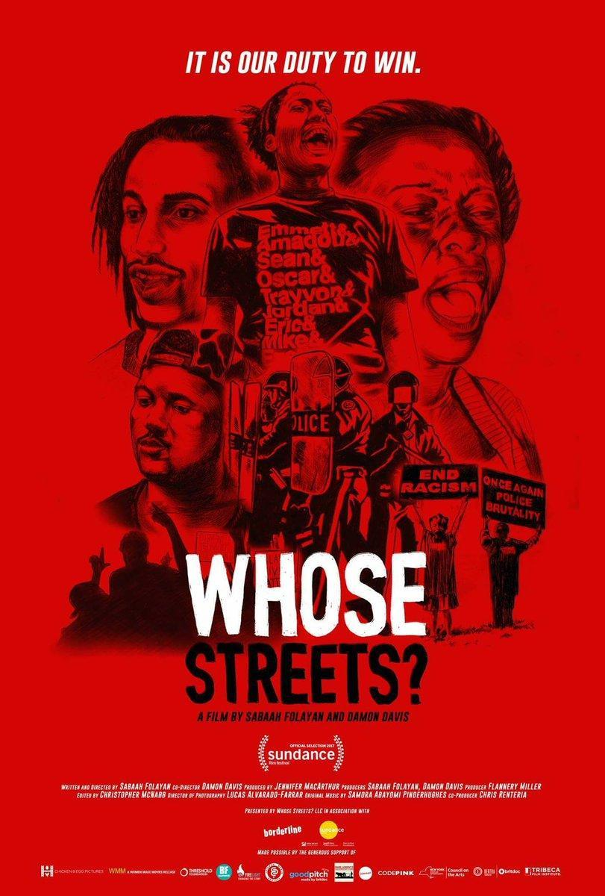

|  |
The Skin We're In: A Year Of Black Resistance And Power, By Desmond Cole
A bracing, provocative, and perspective-shifting book from one of Canada's most celebrated
and uncompromising writers, Desmond Cole. The Skin We're In will spark a national conversation,
influence policy, and inspire activists.
|
|  |
How To Be An Antiracist, By Ibram X. Kendi
#1 NEW YORK TIMES BESTSELLER • From the National Book Award–winning author of Stamped from
the Beginning comes a “groundbreaking” (Time) approach to understanding and uprooting racism
and inequality in our society—and in ourselves
|
|  |
White Fragility: Why It's So Hard For White People To Talk About Racism, By Robin DiAngelo
The New York Times best-selling book exploring the counterproductive reactions white people have when
their assumptions about race are challenged, and how these reactions maintain racial inequality.
|
|  |
Me And White Supremacy: Combat Racism, Change The World, And Become A Good Ancestor, By Layla Saad
Me and White Supremacy: Combat Racism, Change the World, and Become a Good Ancestor is a book by Layla Saad
published on January 28, 2020. Structured as a 28-day guide targeted at white readers, the book aims to aid
readers in identifying the impact of white privilege and white supremacy over their lives.
|
|  |
The Battle of Algiers (1966)
The Battle of Algiers reconstructs the events that occurred in the capital city of
French Algeria between November 1954 and December 1957, during the Algerian War of
Independence. The narrative begins with the organization of revolutionary cells in the Casbah
|
|  |
The Murder of Fred Hampton (1971)
The Murder of Fred Hampton. The Murder of Fred Hampton is a 1971 documentary
film about the short life and death of Fred Hampton, a young African-American
civil rights activist in Chicago and leader of the Illinois Black Panther Party.
|
|  |
13th (2016)
13th is a 2016 American documentary by director Ava DuVernay. The film explores
the "intersection of race, justice, and mass incarceration in the United States;"
it is titled after the Thirteenth Amendment to the United States Constitution, adopted in 1865
|
|  |
Whose Streets? (2017)
Whose Streets? is a 2017 American documentary film about the killing of Michael Brown
and the Ferguson uprising. Directed by Sabaah Folayan and co-directed by Damon Davis
|